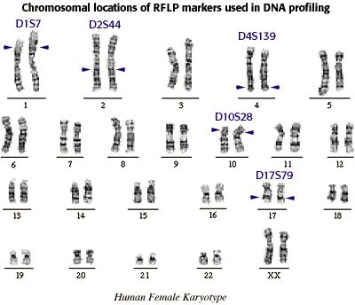

Blackett Family DNA Activity
Inheritance of RFLP markers
Humans have a total of 23 pairs of chromosomes. Each pair contains one chromosome from mom and one from dad. The RFLP markers most commonly used for DNA profile analysis are found on chromosomes 1, 2, 4, 5, 10 and 17. These RFLP markers are named after their locations on these chromosomes. For example, the marker on chromosome 2 is called D2S44 (section 44 of chromosome 2).
These chromosomal locations are also referred to as DNA loci (from Latin: locus is singular, loci is plural). The DNA loci used in profile analysis are shown on the karyotype below.

For a review of karyotyping, you might want to work through the Karyotyping Activity.


The Biology Project
University of Arizona
Tuesday, August 20, 1996
Contact the Development Team
http://www.biology.arizona.edu
All contents copyright © 1996. All rights reserved.